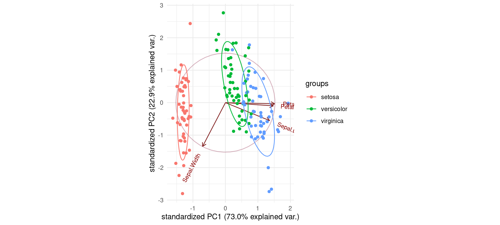

The goal of datools is to cover a lot of convenient tools useful for machine learning consulting using R
Build status


Installation
You can install datools from github with:
# install.packages("devtools")
devtools::install_github("DoktorMike/datools")Example
Say you have a vector of weekdays and you would really like to have that one hot encoded for use in your algorithms then oneHotEncoder comes to the rescue!
## basic example code
library(datools)
library(lubridate)
#>
#> Attaching package: 'lubridate'
#> The following object is masked from 'package:base':
#>
#> date
oneHotEncoder(x=wday(seq(as.Date("2017-10-07"), by ="days", length.out = 10),
label = TRUE))
#> Data Sun Mon Tue Wed Thu Fri Sat
#> 1 Sat 0 0 0 0 0 0 1
#> 2 Sun 1 0 0 0 0 0 0
#> 3 Mon 0 1 0 0 0 0 0
#> 4 Tue 0 0 1 0 0 0 0
#> 5 Wed 0 0 0 1 0 0 0
#> 6 Thu 0 0 0 0 1 0 0
#> 7 Fri 0 0 0 0 0 1 0
#> 8 Sat 0 0 0 0 0 0 1
#> 9 Sun 1 0 0 0 0 0 0
#> 10 Mon 0 1 0 0 0 0 0PCA fun
If you ever need to illustrate for your peers what sort of direction your original data is pointing to in the PCA space this function comes very much in handy.
library(datools)
data(iris)
plotPCAComponent(iris[,-5], iris$Species) + theme_minimal()
Indices
Splitting up a data.frame or a tibble into N buckets of size K is sometimes a hassle. The rangeToBuckets come to the rescue! In this example we’ll split up the mtcars dataset and perform a simple regression on each subset of the data and show the results.
library(datools)
indsList <- rangeToBuckets(1:nrow(mtcars), 10)
sapply(indsList, function(x) coef(lm(mpg~disp, data=mtcars[x,])))
#> [,1] [,2] [,3] [,4]
#> (Intercept) 25.56380288 33.09625946 29.13295921 25.70222222
#> disp -0.02489719 -0.05094025 -0.03830431 -0.03555556Of course we can make this nices by running more splits and making all of it in one go
library(datools)
library(dplyr)
sapply(rangeToBuckets(1:nrow(mtcars), 4),
function(x) coef(lm(mpg~disp, data=mtcars[x,]))) %>%
t() %>% knitr::kable()| (Intercept) | disp |
|---|---|
| 22.71042 | -0.0067663 |
| 27.65159 | -0.0321575 |
| 25.80828 | -0.0359579 |
| 24.71015 | -0.0306960 |
| 35.85532 | -0.0481161 |
| 25.64273 | -0.0339446 |
| 30.76149 | -0.0290120 |
| 23.85850 | -0.0256362 |